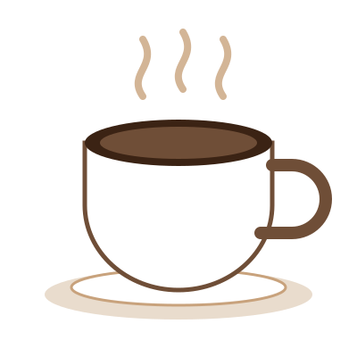

Coffee roasted this week, poured this morning.
We roast in small batches every Tuesday and brew every cup to order. Pick up in store or take a bag of beans home.
Order coffee
Our story
Umber started with one second-hand roaster and a single question: why is good coffee so rarely fresh? We buy directly from small farms, roast within days of selling, and print the roast date on every bag.
Come in, taste the difference, and tell us how you take it.
Visit us
12 Roaster Lane · Open daily, 7:00–18:00 · hello@umbercoffee.example